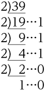
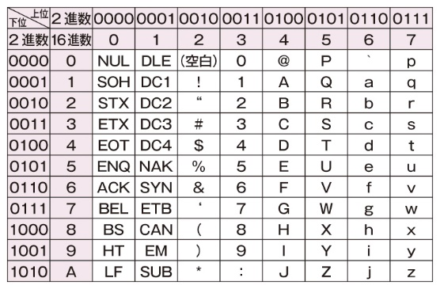
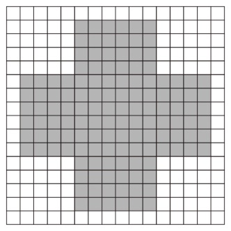

Section 1 — Visual Digest
ひと目でわかる おさらい
数値・文字・音・画像・動画を、すべて0と1の組合せで表す仕組みを順に確認する。2進数と16進数の変換、標本化・量子化・符号化、解像度と階調、データ量の計算、そして圧縮までを一続きで扱う。計算問題が中心の節である。
数値・文字・音・画像・動画。種類ごとに変換のしかたは違うが、行き着く先はみな0と1の並びになる。
nビットで表せる状態は 2n 通り。情報量の単位は 8 と 1024 で繰り上がる。
10進→n進は割り算、n進→10進は桁の重み、16進⇄2進は4桁ずつの束ね。
2進数なら最後の商は1。16進数では余りの10〜15を A〜F で表す。
2進数なら 1,2,4,8,16,32,64,128 …。
例: A=1010、C=1100。

横の上位桁と縦の下位桁をつなげた値が、その文字のコードになる。

標本化→量子化→符号化の3段階。細かく区切る・細かい段階で測るほど元の波形に近づく。
周期が小さいほど元の波形に近い。1秒間の回数が標本化周波数[Hz]で、周期とは逆数。
ビット数が多いほど段階が細かく、元の波形に近い。ずれは量子化誤差。
3ビットなら段階値を3桁の2進数で表す。
画素数で細かさが、1画素の階調で色数が決まる。ディスプレイはRGB、プリンタはCMY。
音声・静止画・動画それぞれの式で求め、8と1024で単位を直す。圧縮には可逆と非可逆がある。
次の問いに答えよ。
3ビット
裏を0、表を1とすると、1回投げた結果は1ビットで表せる。3回ぶんで3ビット。
6ビット
組合せは6×6＝36通り。25＝32＜36≦64＝26 より、6ビット必要。
マークに2ビット、数字に4ビット
マークは4通り → 22＝4 で2ビット。数字は13通り → 23＝8＜13≦16＝24 で4ビット。
220バイト
1 MB＝1024 KB＝1024×1024 B＝210×210＝220 B。
次の10進数は2進数に、2進数は10進数に変換せよ。
100101011(2)
2で割り続けると余りは下から 1,1,0,1,0,1,0,0,1。299＝256＋32＋8＋2＋1。
11000101(2)
197＝128＋64＋4＋1。
102(10)
0×128＋1×64＋1×32＋0×16＋0×8＋1×4＋1×2＋0×1＝102。
167(10)
1×128＋0×64＋1×32＋0×16＋0×8＋1×4＋1×2＋1×1＝167。
次の16進数は2進数に、2進数は16進数に変換せよ。
10100100(2)
A(16)＝1010(2)、4(16)＝0100(2)。
01101110(2)
6(16)＝0110(2)、E(16)＝1110(2)。
8C(16)
下位から4桁ずつ。1000(2)＝8(16)、1100(2)＝C(16)。
DB(16)
1101(2)＝D(16)、1011(2)＝B(16)。
次の文字コード表(一部)において、次の問いに答えよ。
51(16)
Qは上位0101(16進で5)、下位0001(16進で1)。つなげて 51(16)。
01000111(2)
Gは上位0100、下位0111。つなげて 01000111(2)。
a
上位0110・下位0001 の交点。表をたどると a。
音のデジタル化に関する次の(ア)〜(オ)の記述のうち、適当なものをすべて選べ。
カラー画像を構成する画素の赤、緑、青それぞれの明るさを表現するために、2ビットずつ割り当てたとき、次の問いに答えよ。
4階調
2ビット → 22＝4 階調。
64色
各色4階調なので、組合せは 4×4×4＝43＝64 色。
次の問いに答えよ。
24 fps
4320 ÷ (3×60) ＝ 4320 ÷ 180 ＝ 24。
14400フレーム
24 × (10×60) ＝ 24 × 600 ＝ 14400。
3 fps
300000 ÷ (24×60×60) ＝ 300000 ÷ 86400 ≒ 3.47。300000フレーム内に収めるため、小数点以下を切り捨てて3 fps。
次の問いに答えよ。
210 MB
24×512×256×28×20 ÷8 ÷1024 ÷1024 ＝ 210 MB。動画＝1画素のデータ量×画素数×フレームレート×時間。
20 ％
(42 ÷ 210) ×100 ＝ 20 ％。
ある文字コードは、2バイトで文字や記号を表している。この文字コードに関する次の問いに答えよ。
7 KB
1文字＝2バイト → 2×3584＝7168 B。7168 ÷ 1024 ＝ 7 KB。
16384種類
2バイト＝4桁の16進数。下位3桁は163＝4096通り。最上位は8・9・E・Fの4通り。4×4096＝16384種類。
例題33において一部が表記されている文字コードには、「制御文字」と呼ばれる、ディスプレイやプリンタでの文字の表示の制御などに使用される特殊な文字コードがあり、その多くは16進数で表現した文字コードで上位桁に0または1が割り当てられている。あるコンピュータシステムでは、文字コード 0A(16) の「LF」と 0D(16) の「CR」の二つをセットにして「改行」を行っている。また、文字コード 20(16) の「（空白）」は半角スペースである。このことを踏まえて、次の会話文のテキストデータのデータ量は何Bか答えよ。
Where is the station?
It's over there.
Thank you.
51 B
1文字＝1バイト。空白を除く見える文字・記号は41文字＝41 B。半角スペース6個＝6 B。改行2つはそれぞれLF＋CRの2文字ぶんなので 2×2＝4 B。合計 41＋6＋4＝51 B。
標本化周波数96 kHz、量子化ビット数24ビット、ステレオで記録されている60分間の音声データが複数あり、これらをメモリーカードへコピーする。このとき、32 GBのメモリーカードにコピーできる音声データの最大数は何個か答えよ。ただし、これらの音声データは非圧縮とする。
16個
音の情報量＝量子化ビット数 × 標本化周波数 × 時間 × チャンネル数。1個＝24×96000×(60×60)×2 bit ≒ 1.93 GB。32 ÷ 1.93 ≒ 16.58 より、最大16個。
赤(R)、緑(G)、青(B)の光の三原色の混色によって512色を表現するカラー画像について次の問いに答えよ。
9ビット
29＝512 より、9ビット。
8階調
9 ÷ 3＝3ビットずつ。23＝8 階調。
2.2 MB
9 × 1920 × 1080 ÷8 ÷1024 ÷1024 ≒ 2.2 MB。
シアン(C)、マゼンタ(M)、イエロー(Y)の色の三原色の重ね合わせで印刷するカラープリンタについて次の問いに答えよ。
(ア)、(エ)
緑(G)＝Y＋Cの混色、赤(R)＝M＋Yの混色。Yが切れると、もう一方のインクの色だけが残る → Gの部分はC、Rの部分はMになる。
4段階
各色 n 段階なら表現できる色は n3 色。n3＝64 より n＝4 段階。
ランレングス圧縮について次の問いに答えよ。

34.4 ％
圧縮前＝4×16×16＝1024 bit。圧縮後は塗りつぶしの区画ごとに8ビット。1行目と16行目は1区画＝8 bit、2〜15行目は3区画＝8×3＝24 bit。合計＝8＋24×14＋8＝352 bit。圧縮率＝(352 ÷ 1024)×100 ≒ 34.4 ％。
(イ)、(ウ)
(ア)×同じ色の面が大きい画像向き。(エ)×可逆圧縮なので完全に元へ戻る。(オ)×扱える色数とは無関係。連続が少ないと(ウ)のように増えることもある。